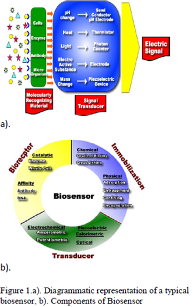
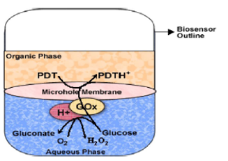

AMBE 101 :: Lecture 31 :: BIOSENSOR

Biosensor is an analytical device for the detection of an analyte that combines a biological component with a physicochemical detector component
It consists of 3 parts:
- The sensitive biological element (biological material (eg. tissue, microorganisms, organelles, cell receptors, enzymes, antibodies, nucleic acids, etc), a biologically derived material or biomimic) the sensitive elements can be created by biological engineering.
- The transducer or the detector element (works in a physicochemical way; optical, piezoelectric, electrochemical, etc.) that transforms the signal resulting from the interaction of the analyte with the biological element into another signal (i.e., transducers) that can be more easily measured and quantified;
- Associated electronics or signal processors that are primarily responsible for the display of the results in a user-friendly way. This sometimes accounts for the most expensive part of the sensor device, however it is possible to generate a user friendly display that includes transducer and sensitive element (see Holographic Sensor).
A common example of a commercial biosensor is the blood glucose biosensor, which uses the enzyme glucose oxidase to break blood glucose down. In doing so it first oxidizes glucose and uses two electrons to reduce the FAD (a component of the enzyme) to FADH2. This in turn is oxidized by the electrode (accepting two electrons from the electrode) in a number of steps. The resulting current is a measure of the concentration of glucose. In this case, the electrode is the transducer and the enzyme is the biologically active component.
Recently, arrays of many different detector molecules have been applied in so called electronic nose devices; where the pattern of response from the detectors is used to fingerprint substance. Current commercial electronic noses, however, do not use biological elements.
Principles of Detection
Analytical chemistry plays an important role in food quality parameters because almost every sector of industry and public service relies on quality control. A food quality biosensor is a device, which can respond to some property or properties of food and transform the response(s) into a detectable signal, often an electric signal. This signal may provide direct information about the quality factor(s) to be measured or may have a known relation to the quality factor. There are various kinds of biosensors most of which work on the principle of one of the following:
Electrochemical Biosensors
Electrochemical biosensors are based on monitoring electroactive species that are either produced or consumed by the action of the biological components (e.g., enzymes and cells). Transduction of the produced signal can be performed using one of several methods under two broad headings:
- Potentiometric Biosensors
- Amperometric Biosensors
Potentiometric Biosensors
These are based on monitoring the potential of a system at a working electrode, with respect to an accurate reference electrode, under conditions of essentially zero current flow. In process, potentiometric measurements are related to the analyte activity (of a target species) in the test sample. Potentiometric biosensors can operate over a wide range (usually several orders of magnitude) of concentrations. The use of potentiometric biosensors for food quality analysis has not been as widely reported as for amperometric sensors. However, some of the examples where this approach has been used for food quality analysis include estimating monophenolase activity in apple juice, determining the concentration of sucrose in soft drinks, measuring isocitrate concentrations in fruit juices, and determining urea levels in milk.
Amperometric Biosensors
The use of amperometric biosensors in signal transduction has proved to be the most widely reported using an electrochemical approach. Both “one-shot” (disposable) sensors and on-line (multi measurement) devices are commercially available, monitoring a wide range of target analytes. In contrast to potentiometric devices, the principle operation of amperometric biosensors is defined by a constant potential applied between a working and a reference electrode. The applied potential results in redox reactions, causing a net current to flow. The magnitude of this current is proportional to the concentration of electro active species present in test solution and both cathodic (reducing) and anodic (oxidizing) reactions can be monitored amperometrically. Most of the amperometric biosensors described use enzymes as the biorecognition element. Typically, oxidase and dehydrogenase enzymes have been the most frequently exploited catalysts used for these biosensor formats.
Calorimetric Biosensors
Most of the biochemical reactions are accompanied by either heat absorption or production. Sensors based on calorimetric transduction are designed to detect heat generated or consumed during a biological reaction; by using sensitive heat detection devices. Various biosensors for specific target analytes have been constructed. In the field of food quality analysis, uses of such biosensors to detect metabolites have been described.
Optical Biosensors
These sensors are based on measuring responses to illumination or to light emission. Optical biosensors can employ a number of techniques to detect the presence of a target analyte and are based on well-founded methods including chemiluminescence, fluorescence, light absorbance, phosphoresence, photothermal techniques, surface plasmon resonance (SPR), light polarization and rotation, and total internal reflectance. For example the use of this technique has been demonstrated to detect the presence of allergens, in particular peanuts, during food production.
Acoustic Biosensors
Piezoelectric quartz crystals can be affected by a change of mass at the crystal surface; this phenomenon has been successfully exploited and used to develop acoustic biosensors. For practical applications, the surface of the crystal can be modified with recognition elements (e.g., antibodies) that can bind specifically to a target analyte.
Immunosensors
Immunosensors are based on exploiting the specific interaction of antibodies with antigens. Typically, immunoassays (such as the enzyme-linked immunosorbent assay technique) employ a label (e.g., enzyme, antibody, fluorescent marker) to detect the immunological reaction. The use of biosensor platforms, linked to an immunoassay format, offers a route to rapid and accurate quantitative measurements of target analytes.
Applications of Biosensors
There are many potential applications of biosensors of various types. The main requirements for a biosensor approach to be valuable in terms of research and commercial applications are the identification of a target molecule, availability of a suitable biological recognition element, and the potential for disposable portable detection systems to be preferred to sensitive laboratory-based techniques in some situations. Some examples are given below:
- Glucose monitoring in diabetes patients ←historical market driver
- Other medical health related targets
- Environmental applications e.g. the detection of pesticides and river water contaminants
- Remote sensing of airborne bacteria e.g. in counter-bioterrorist activities
- Detection of pathogens
- Determining levels of toxic substances before and after bioremediation
- Detection and determining of organophosphate
- Routine analytical measurement of folic acid, biotin, vitamin B12 and pantothenic acid as an alternative to microbiological assay
- Determination of drug residues in food, such as antibiotics and growth promoters, particularly meat and honey.
- Drug discovery and evaluation of biological activity of new compounds.
- Protein engineering in biosensors
- Detection of toxic metabolites such as mycotoxins
Utility Biosensors for applications in Agriculture in Food/ Fruit Quality Control
Quality control is the essential part of a food industry and efficient quality assurance is becoming increasingly important. Consumers expect good quality and healthy food at a given price; with good shelf life and high safety while food inspections require good manufacturing practices, safety, labelling and compliance with the regulations. Further, food producers are increasingly asking for efficient control methods, in particular through on-line or at-line quality sensors. Their main aim is to satisfy the consumer and regulatory requirements and to improve the production feasibility, quality sorting, automation and reduction of production cost and production time subsequently.
Biochemical Composition of Fruits
The quality of soft fruit, in terms of taste, nutrition and consumers acceptance, is fundamentally based on the biochemical composition of the fruit. In soft fruits (viz. blackcurrant and strawberry) sugar: acid ratios can be used as an important index of fruit maturity and act as a determinant of overall fruit. However, sugar: acid ratios are infrequently used due to a requirement for specific instrumentation and semi-skilled analytical scientists. Today we need a simple and low-cost alternative, which would significantly enhance both the number and extent of tests carried out.
Fruit Maturity, Ripening and Quality Relationships
Fruit maturity at harvest is the most important factor that determines shelf life and final fruit quality. If harvested immature then fruits are more subject to shriveling and mechanical damage, and are of inferior quality when ripe, whereas overripe fruits are liable to become soft and mealy with bland flavour soon after harvest. Therefore, fruits harvested either too early or too late in their season are more susceptible to post harvest physiological disorders than fruits harvested at proper maturity.
Fruits can be divided into two groups:
- Fruit that are incapable of enduring their ripening process once picked from the plant like berries, cheery, citrus fruits, grapes, lychee, pineapple, pomegranate, and tamarillo.
- Fruits that can be harvested mature and ripped off the plant like apple, apricot, avocado, banana, cherimoya, guava, kiwifruit, mango, nectarine, papaya, passion fruit, pear, peach, persimmon, plum, quince, sapodilla, sapota.
Volatile compounds are responsible for the characteristic aroma of fruits and are present in extremely small quantities (<100< g/g fresh wt.). The major volatile formed is ethylene. Scientists are trying to develop portable instruments with sensors that detect volatile production by fruits and hence detecting maturity and quality. Other strategies include the removal of a very small amount of fruit tissue and measurement of total sugar or organic acid content.
Major organic acids in fruits
Organic acids function in growth, maturation, senescence, color, and antimicrobial activity of fruits. The low pH of fruits is due to the three most common organic acids present in fruits citric acid, malic acid, and tartaric acid. The total amount of acid in fruits varies widely, from about 0.2% in pear juice to 0.8% in limejuice. The amount and type of acid present in fruits determine the fresh taste of fruits and also affects the shelf life.
Organic Acid as an Indicator of Fruit Maturity
Organic acids directly play an important role in the growth, maturation and acidity of the fruit, and also affect the shelf life of the fruit by influencing the growth of microorganisms. The citric, malic, oxalic, and tartaric acids ranging from 0.1 to 30 g/L were found in orange, grape, and apple juices. There is a considerable difference in the organic acid content found in various types and brands of fruit juice. For example, Minute Maid contains higher levels of oxalic and citric acids when compared to all other orange juices tested. Grape concentrate was found to have lower amount of malic acid than other grape juice, while freshly squeezed grape juice contains higher amount of tartaric acid. Brae burn apples contained the highest amount of citric acid in apples; however Granny Smith apples were the overall most acidic apples tested.
Successful Examples of Organic Acid Biosensors Developed Pyruvic Acid
Onion flavour is principally directed by the perception of pungency. A disposable prototype electrochemical screen-printed (carbon-based) biosensor (C2030519D5, GEM Ltd., Gwent, UK) was constructed using pyruvate dehydrogenase immobilized on mediated Meldolas Blue electrodes and a combined Ag/AgCl reference/counter electrode, both screen-printed onto a PVC substrate to determine pungency in onions (Allium cepa L.). Electrochemical measurements were carried out using a Palm Sense potentiostat (Palm Instruments BV, The Netherlands). The biosensor developed was able to differentiate between mild and pungent bulbs with pyruvate concentrations ranging between 4 and 8 mM in freshly extracted juices. Electrochemical measurements were carried out at +50 mV at 21°C.

Glucose Biosensors
Most of the glucose biosensors developed are based on immobilized glucose oxidase. In many cases, glucose oxidase has been associated with mediators so as to bring down the high working potential required for hydrogen peroxide breakdown. The α-D glucose sensor developed was also based on glucose oxidase, at the working potential of -350 mV vs. Ag/AgCl, hydrogen peroxide was catalytically oxidized at a rhodinised carbon electrode (White et al, 1994). A novel and simple method which do not involve enzyme or monomer modifications, for the coimmobilization of ferrocene and GOx in a poly(pyrrole) matrix for use as glucose biosensor was developed (Foulds and Lowe, 1988). In spite of the low conductivity of the polypyrrole film formed, the biosensor’s performance was better than that of other devices reported due to redox mediation of ferrocene that lowers the working potential to 0.4 V. The characterization of the polymer prepared from an ethanolic suspension demonstrated the presence of alcohol interferes in the polymerization kinetics (Pablo et al., 2001). However, this played a beneficial role in efficient immobilization of both, the enzyme and the ferrocene, in a very thin electroactive film. This fact improved the biosensor’s time response, avoiding mass transport effects. A new type of disposable amperometric biosensor was devised by screen-printing thick-film electrodes directly on a porous nitrocellulose (NC) strip. A glucose biosensor based on hydrogen peroxide detection was constructed by immobilizing glucose oxidase (GOx) on the NC electrode strip and by formulating a strong oxidation layer (i.e., PbO2) at the sample loading area, placed below the GOx reaction band. The screen-printed PbO2 paste serves as a sample pretreatment layer that removes interference by its strong oxidizingability. Samples applied were carried chromatographically, via the PbO2 paste, to the GOx layer, and glucose was catalyzed to liberate hydrogen peroxide, which was then detected at the electrode surface. The proposed NC/ PbO2 strip sensor is shown to be virtually insusceptible to interfering species such as acetaminophen and ascorbic and uric acids and to exhibit good performance, in terms of the sensor to sensor reproducibility. The characterization of metal-decorated CNTs was done using X-ray diffraction analysis, transmission electron microscopy (TEM), high-resolution TEM, scanning electron microscopy, and energy-dispersive X-ray analysis. Amperometric biosensor fabricated by depositing GOD over Nafion-solubilized Au-MWNT electrode retained its biocatalytic activity and obtained fast and sensitive glucose quantification. The fabricated GOD/Au- MWNT/Nafion electrode has a good glucose biosensing potential, and it displayed a linear response up to 22 mM glucose and a detection limit of 20 ìM method.

Sucrose Biosensor
Sucrose is an essential part of any fruit, so estimating the concentration of sucrose at different maturity levels could help in identifying the ripening parameters of fruits. Therefore, with regard to sucrose detection, electrodes made up of invertase, mutarotase and glucose oxidase and mediated tri-enzyme electrode based on sucrose phosphorylase and electrocatalytic oxidation of NADH, have been used. Because real samples contain both glucose and sucrose, sucrose sensors have been operated in tandem with glucose oxidase sensors. The sucrose sensor developed was based on the invertase, mutarotase and glucose oxidase reaction scheme and the sucrose level was calculated with respect to the net glucose sensors.
Ascorbic Acid Sensor
Ascorbic acid has been measured both by direct electrochemical oxidation and by enzymatic methods using ascorbate oxidase. In the first case, an ascorbate oxidase electrode was used to measure the signal generated by other electroactive interferents in the analyte. The second method was based on the measurement of oxygen consumed during the enzyme-catalysed oxidation of ascorbic acid using Clark Electrode.
Lactic Acid Biosensor
The level of lactic acid in blood is used in clinical diagnostics of hypoxia, lactic acidosis, some acute heart diseases and drug toxicity tests. Reliable blood lactate measurements would also be of interest in sports medicine. Lactate can be measured based on the reaction using NAD+ dependent lactate dehydrogenase and ferricyanide. The concentration of dissolved L-lactate was determined in tomato paste and baby food samples using a SIRE-based (sensors based on injection of the recognition element) biosensor. The evaluation principle was based on the injection of small amount of enzyme into an internal delivery flow system and held in direct spatial contact with the amperometric transducer by the use of a semipermeable membrane. All the measurements were based upon the reversible enzymatic conversion of L lactate to pyruvate and hydrogen peroxide by lactate oxidase. The L-lactate concentrations of the tomato paste and baby food were calculated to be 1.02 (0.02 mM) and 2.51 (0.10 mM), respectively, using the standard addition method.
Phenolic Compounds
Phenolic compounds are widespread in nature, and they play a significant role in living organisms. They are used in medicine and industries, including wood processing and pesticide production. Most of the phenolic derivative compounds are highly toxic, and their determination in low concentrations is the significant problem. Scientists are developing various procedures for determining phenols with biosensors.
A biosensor based on crude seed hull enzyme extracts has been prepared for monitoring phenol and hydrogen peroxide. The biosensor has confirmed very promising results as a successful instrument to monitor both hydrogen peroxide and phenol. It is an inexpensive biosensor that could be operated for up to 3 weeks with rapid response and stability parameters. In conditions of response to phenol detection, the developed SBP biosensor was found less sensitive than other previously reported biosensors based on purified SBP or HRP or on crude extracts of sweet potato, which have detection limits in the micromolar range for phenols. The foremost reason for this was the low activity of the enzyme extracts. Further work on the improvement of biosensor sensitivity and applications for the detection of chlorophenols and other substituted phenols are in progress.
The amperometric biosensor described glucose oxidase and polyphenol oxidase carbon paste electrodes prepared via a new strategy of carbon paste modification based on the in situ electropolymerizaton of pyrrole monomer previously mixed within the paste. Such alteration induced a better electrical percolation of the carbon structure and enhanced the enzyme entrapment within the electrode material. Therefore, attractive potentialities offered by a biocomposite electrode based on PPO for the detection of flavonols have been demonstrated to control the phenolic levels in beer samples.
Benzoic Acid
An amperometric benzoic acid-sensing inhibitor biosensor was prepared by immobilizing mushroom (Agaricus bisporus) tissue homogenate on a Clarktype oxygen electrode. The effects of the quantity of mushroom tissue homogenate, the quantity of gelatin and the effect of the cross-linking agent glutaraldehyde percent on the biosensor were deliberated. The most favourable concentration of phenol used as substrate was 200 mM. The biosensor responded linearly to benzoic acid in a concentration range of 25–100 mM and Standard deviation (s.d.) was found to be ±0.49 μM for 7 successive determinations at a concentration of 75 μM. The inhibitor
biosensor based on mushroom tissue homogenate was applied for the determination of benzoic acid in fizzy lemonade, some fruits and groundwater samples. A good concord was shown when the results were compared to those obtained using AOAC
method.
Fructose
A superior amperometric biosensor based on a solid binding matrix (SBM) composite transducer has been used for the determination of d-fructose in various food samples. The enzyme, d-fructose dehydrogenase (EC 1.1.99.11), was incorporated directly into a solid composite transducer containing both 2-hexadecanone as SBM and chemically modified graphite. The current variation caused by the presence of d-fructose was calculated amperometrically using Hexacyanoferrate (iii) as a redox mediator. The amperometric signals generated were fast, reproducible and linearly proportional to d-fructose concentrations in the range 50×10-6 – 10×10-3mol l-1, with a correlation coefficient of 0.999. A set of measurements at +0.20 V versus SCE for 2×10-3 mol l-1 D-fructose yielded a relative standard deviation for the steady-state current of 2.11%. The biosensor selectivity against anionic interferents such as Lascorbate was enhanced by the use of chemically modified graphite by a mild oxidation step. The biosensor was found stable for 6 months and the assay of D-fructose by this electrode was not affected by the presence of sugars or other interferents commonly found in food samples.
ENVIRONMENTAL APPLICATIONS
Toxicity
In environmental pollution monitoring, it is becoming a general opinion that chemical analysis by itself does not provide sufficient information to assess the ecological risk of polluted waters and wastewaters. In the European Union, along with more stringent demands for water treatment (Council Directive 91/271/EEC), industrial and urban wastewater effluents shall reach certain limits of nontoxicity before the effluent can be discharged into the environment. Thus, much effort has been made during the last years to develop and use different bioassays and biosensors for toxicity evaluation of water samples. Whole organisms are used to measure the potential biological impact (toxicity) of a water or soil sample. That is the case of the toxicity assays Microtox® (Azure, Bucks, UK), or ToxAlert® (Merck, Darmstadt, Germany). These systems are based on the use of luminescent bacteria, Vibrio fischeri, to measure toxicity from environmental samples. Bacterial bioluminescence has proved to be a convenient measure of cellular metabolism and, consequently, a reliable sensor for measuring the presence of toxic chemicals in aquatic samples. Some bioassay methods are integrated now in biosensors such as the Cellsense®, which is an amperometric sensor that incorporates Escherichia coli bacterial cells for rapid ecotoxicity analysis. It uses ferricyanine, a soluble electron mediator, to divert electrons from the respiratory system of the immobilized bacteria of a suitable carbon electrode. The resulting current is, thus, a measure of bacterial respiratory activity, and the perturbation by pollutants can be detected as a change in the magnitude of the current. Cellsense has been applied to investigate the toxicity of 3,5-dichlorophenol and other phenols in wastewater, for the determination of nonionic surfactants and benzene sulfonate compounds, for the analysis of wastewater treatment works (WWTW) influent and effluent, and for the toxicity testing of wastewaters and sewage sludge. Moreover, Cellsense has been proposed as one of the newer rapid toxicity assessment methods within the direct toxicity assessment (DTA) demonstration program of the UK Environmental Agency. Most environmental biosensors have focused on bacterial systems while eukariotic biosensors are rare; even more rare is the use of mammalian cells. The mammalian cell, which is more complex than bacteria, can give a more sensitive response when compared to bacteria while also responding to the estrogenic effects of chemicals. A recombinant fluorescent Chinese Hamster Ovary cell line, utilizing a fluorescent reporter system, was used to monitor various toxicants, especially endocrine-disrupting compounds (EDCs), in diverse aqueous environments. EDCs have been also analyzed with a multichannel two-stage mini-bioreactor system using a genetically engineered bioluminescent bacteria. The toxicity of various samples spiked with known endocrine-disrupting chemicals, and phenol was investigated.
CONCLUSIONS
Despite the huge potential of biosensors, and the ever-increasing number of biosensors developed, commercially available biosensors are being applied to a restricted area of the potential market. In general, biosensors for environmental analysis have several limitations: sensitivity, response time, and lifetime, which should be improved for them to become a competitive analytical tool. The areas of development that are expected to have an impact in biosensor technology are: immobilization techniques, nanotechnology, miniaturization, and multisensor array determinations. However, a crucial aspect may be the production of new sensing elements easy to synthesize and with the capability to broaden the spectra of selectivities that can be reached by a biosensor. At present, the preparation and production in large scales of biomolecules such as enzymes or antibodies need an investment of time and knowledge. Synthetic peptides and MIPs are contemplated as promising alternatives overcoming the above-mentioned limitations. Unfortunately, the affinity accomplished by these synthetic receptors is still several orders of magnitude below that of the antibodies. Improvement in the affinity, specificity, and mass production of the molecular recognition components may ultimately dictate the success or failure of detection technologies. The possibility of tailor binding molecules with predefined properties, such as selectivity, affinity, and stability, is one of the major aims for biotechnology. The development of advanced receptors will allow the analysis of complex real samples and in situ measurements resolving the responses from the analyte and from nonspecific background effects. Since scientific attention is currently being given to biotechnology, as this review has pointed out, the development of improved molecular recognition elements will be followed by a corresponding enhancement of the biosensor features. From the above viewpoint, it is clear that the future of biosensors will rely on the success of emerging sophisticated micro and nanotechnologies, biochemistry, chemistry, thin-film physics, and electronics. To reach this goal, an important investment in research, expertise, and the necessary facilities is needed. However, as the world becomes more concerned about the impact that environmental contamination may cause on public health and the ecosystem, the demand for rapid detecting biosensors will only increase. Biosensors still need to achieve the confidence of potential users, having in mind that the commercialization of new devices will always be the best indicator of the success of a biosensor technology. The analysis of complex matrices and of analytes difficult to determine by the actual analytical procedures (i.e., highly polar compounds), are progressively being approached by biosensors. However, there is still a lack of alternative biosensing systems for an important bunch of emerging contaminants such as bisphenol A, phtalates, and polybrominated compounds (used as flame retardants), veterinary and human medicines and personal care products (nutraceuticals, synthetic fragances, sun screen agents, etc.)
| Download this lecture as PDF here |